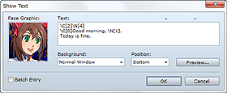
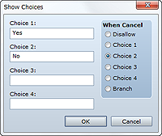
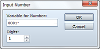
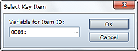
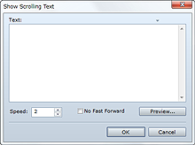

Opens a message window for displaying text.
Enter the text to display. Up to four lines at a time can be displayed in the message window. To display the second line onward, press the Enter key for each new line.
Specify the face graphic to display on the left side of the message window. Specify an image in the Face Graphic dialog box that appears when you double-click the field.
Select the format of the message window for displaying text.
Specify either Bottom, Middle, or Top for the position at which the message window will appear.
Click this button to check the display of the message window.
Selecting this option enables the entry of text beyond four lines. Text exceeding four lines is set in the Contents list divided into separate Show Text event commands for each block of four lines.
・Pressing Ctrl+Enter while inputting text is the same as clicking the OK button.
・The downward facing triangles at the top of the Text field are guides indicating the number of characters that fit in the message window. (The triangle on the left indicates the limit when displaying a face graphic.) Use the Preview button to see whether text will display as intended.
・The Background and Position settings do not apply to message windows that appear in battle.
・Entering control characters in messages allows you to display the value of variables and the name of actors among other things. A description of available control characters is provided below. Make sure to enter control characters in single-byte characters.
| \V[n] | The control characters are replaced by the value of variable n. |
|---|---|
| \N[n] | The control characters are replaced by the name of actor n. |
| \P[n] | The control characters are replaced by the name of party member n (numbered in formation order). |
| \G | The control characters are replaced by the currency unit. |
| \C[n] | Display text that follows it in color n. Color n conforms to the graphic content set for the window skin. |
| \I[n] | Draw icon n. |
| \{ | Increase text size by one step. |
| \} | Decrease text size by one step. |
| \$ | Open the money window. |
| \. | Pause text display for 1/4 second. |
| \| | Pause text display for 1 second. |
| \! | Wait for a button press during text display. |
| \> | Instantly display the remaining text on the same line. |
| \< | Clear the change in display format set by the \> control character. |
| \^ | Do not wait for a button press after displaying text. |
| \\ | These control characters are replaced by a backslash (\). |
・The number (n) that you specify with control characters can also be specified using a variable. For example, entering "\N[\V[1]]" displays the name of the actor with the same ID as the value of the first variable (\V[1]).

Displays up to four choices, allowing the processing to branch according to the player's selection.
Enter text for the choices. Leave unused selections blank.
Specify the handling for when the player cancels while choices are displayed. Choice 1 to Choice 4 are considered to be selections of the specified choice. Disallow disables the cancellation itself. Branch branches cancellation processing.
・Confirming the settings you made will create branches in Contents corresponding to the choices (including cancel). Set the commands to run after selecting choices in these branches.

Displays a window for entering a value and then assigns the value the player entered to a variable.
Specify the variable to which to assign the number the player entered.
Specify the number of digits (1 to 8) for the value to be entered.
・When value input processing starts, the value assigned to the specified variable will be displayed.

Displays a selection screen for items categorized as key items. The ID of the item the player selects is assigned to a variable.
Specify the variable to which to assign the number of the item (item ID) selected by the player.

Displays text by scrolling it upward from the bottom of the screen. Pressing the confirm button enables fast scrolling.
Enter the text to display.
Specify the scrolling speed (1 to 8). The larger the value, the faster the speed.
Disables the fast-scrolling feature by the confirm button.